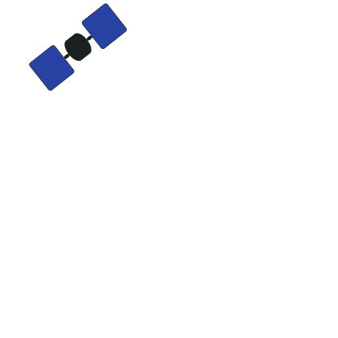
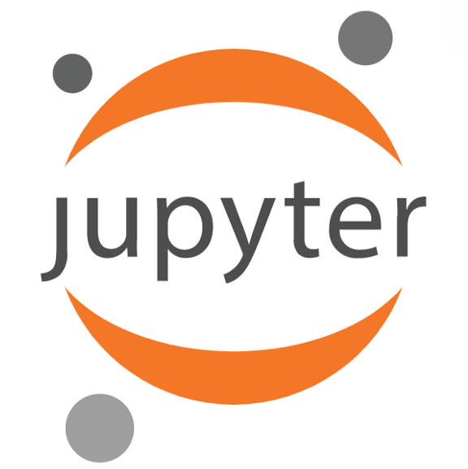

About

Experience
University of Minnesota - Masters of Geographic Information Science, B.S. Geography
University of Minnesota
Graduate Research Assistant
Aug. 2018 - Present
- Creating a gateway using Ansible, Kubernetes, and Docker to administer spatial data science curriculum in the Jupyter Notebook environment.
- Building Python and database (Postgres) framework to log information about student’s interaction with material.
- Constructing a REST api using Flask to service to maintain proper security for problem set solutions.
Esri
Professional Services Intern
May 2018 - Aug. 2018
- Presented in front of ~12,000 people on the main stage of the largest geospatial conference in the world.
- Assisted in the development of a park management platform for National Parks in Africa and South America.
- Automated asset management and workforce workflow solutions with Python.
University of Minnesota
Teaching Assistant
Jan. 2018 - May 2018
- Designed curriculum for Principles of Geocomputing course which focuses on building spatial computation & analytic skills with Python.
- Lectured several of the classes emphasizing material in best practices and machine learning in Python.
- Graded 195 student labs throughout the duration of the semester while offering in person assistance in and out of the classroom.
University of Minnesota
Graduate Research Assistant
Aug. 2017 - May 2018
- Updated, developed, and maintained the Minnesota Smart City Infrastructure Web Application to promote collaboration and participation for investment in state infrastructure at a policy level.
- Provided geospatial technical support through the Help Desk to University of Minnesota students, staff, and faculty.
George Mason University
Research Experience for Undergraduates (REU)
Jul. 2017 - Aug. 2017
- Worked on the Open Geospatial Consortium (OGC) Web Service portion of the Big Data platform.
University of Minnesota
Undegraduate Research Assistant
May 2015 - May 2017
- Provided geospatial technical support through the Help Desk to University of Minnesota students, staff, and faculty.
- Created a land cover assessment for the Minneapolis-St. Paul region to locate densely vegetated regions to help analyze ecosystems.
Travelers Insurance
Business Intelligence & Geospatial Intern
May 2015 - May 2017
- Assessed eight different vendors to improve the accuracy of internal location intelligence available to the enterprise.
- Assisted in the creation of data catalog to streamline the process of locating geospatial data in the enterprise.
University of Minnesota
Student Research Assistant
Feb. 2015 - Jan. 2016
- Delineated over 9,000 polygons to outline the center pivot fields for use within the application.
- Conducted field work detecting soil moisture levels over a course of a summer to aid in spatiotemporal precision agriculture research.
Github

Projects
Hour of Cyberinfrastructure is a National Science Foundation (NSF) funded project with an aimed objective to deepen student’s understanding and skill sets in regards to cyberliteracy for GIScience. With the importance of data science knowledge and skill sets growing, there is an apparent need to educate and close skill gaps in the future workforce. Through this project, 17 lessons will be developed in the following eight core areas: Big Data, Computational Thinking, Cyberinfrastructure, Interdisciplinary Communication, Geospatial Data, Parallel Computing, Spatial Modeling & Analytics, and Spatial Thinking. As lessons are implemented through partners across the United States through JupyterHub, customized Jupyter Widgets will aid in providing the user with interactive pieces to guide them through the complexities of learning technical material. These widgets provide validation to questions, track user metrics, and log all the information to a central repository. The tracked metrics will act as a proxy to understand how our users progress through each lesson. This approach will not only aid in the creation and adjustment of material, but it will assist in answering how students learn complex technical material. Though this is the foundational stage, this data will be instrumental in the construction of future material to help progress the teachings across different fields. Bridging the gap of skills and refining our pedagogical approach in the production of material marks great promise in the expansion of cyberliteracy across different communities.
Hour of Cyberinfrastructure is a National Science Foundation (NSF) funded project with an aimed objective to deepen student’s understanding and skill sets in regards to cyberliteracy for GIScience. With the importance of data science knowledge and skill sets growing, there is an apparent need to educate and close skill gaps in the future workforce. Through this project, 17 lessons will be developed in the following eight core areas: Big Data, Computational Thinking, Cyberinfrastructure, Interdisciplinary Communication, Geospatial Data, Parallel Computing, Spatial Modeling & Analytics, and Spatial Thinking. As lessons are implemented through partners across the United States through JupyterHub, customized Jupyter Widgets will aid in providing the user with interactive pieces to guide them through the complexities of learning technical material. These widgets provide validation to questions, track user metrics, and log all the information to a central repository. The tracked metrics will act as a proxy to understand how our users progress through each lesson. This approach will not only aid in the creation and adjustment of material, but it will assist in answering how students learn complex technical material. Though this is the foundational stage, this data will be instrumental in the construction of future material to help progress the teachings across different fields. Bridging the gap of skills and refining our pedagogical approach in the production of material marks great promise in the expansion of cyberliteracy across different communities.
Kilauea

Hour of Cyberinfrastructure is a National Science Foundation (NSF) funded project with an aimed objective to deepen student’s understanding and skill sets in regards to cyberliteracy for GIScience. With the importance of data science knowledge and skill sets growing, there is an apparent need to educate and close skill gaps in the future workforce. Through this project, 17 lessons will be developed in the following eight core areas: Big Data, Computational Thinking, Cyberinfrastructure, Interdisciplinary Communication, Geospatial Data, Parallel Computing, Spatial Modeling & Analytics, and Spatial Thinking. As lessons are implemented through partners across the United States through JupyterHub, customized Jupyter Widgets will aid in providing the user with interactive pieces to guide them through the complexities of learning technical material. These widgets provide validation to questions, track user metrics, and log all the information to a central repository. The tracked metrics will act as a proxy to understand how our users progress through each lesson. This approach will not only aid in the creation and adjustment of material, but it will assist in answering how students learn complex technical material. Though this is the foundational stage, this data will be instrumental in the construction of future material to help progress the teachings across different fields. Bridging the gap of skills and refining our pedagogical approach in the production of material marks great promise in the expansion of cyberliteracy across different communities.
Geocomputing Intro
The availability of computing infrastructures such as high-performance and cloud computing, high-speed networks, and rich data has led to a new scientific paradigm using computational approaches, termed computational science. Geocomputation is the "application of a computational science paradigm to study a wide range of problems in geographical and earth systems (the geo) contexts" (Openshaw, 2014). This course will introduce students to geocomputation as well as related areas including big spatial data, and cyberinfrastructure. Students will engage in hands-on exercises learning principles and best-practices in geocomputing. The ability to program is an essential skill for GIScientists. Learning to program takes time and a lot of practice, and in this course students will learn how to develop programs in the Python programming language to solve geospatial problems.